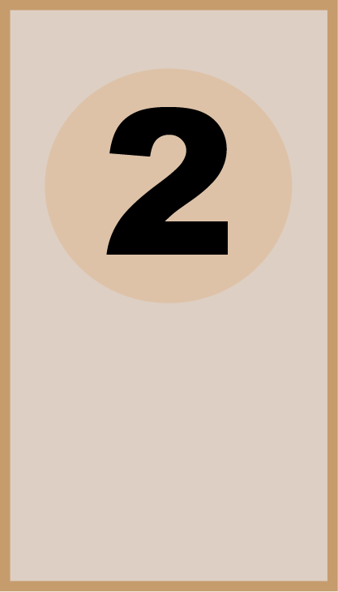
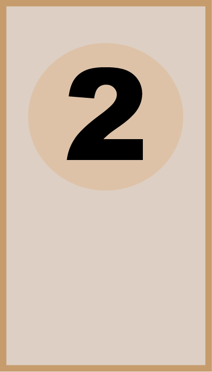
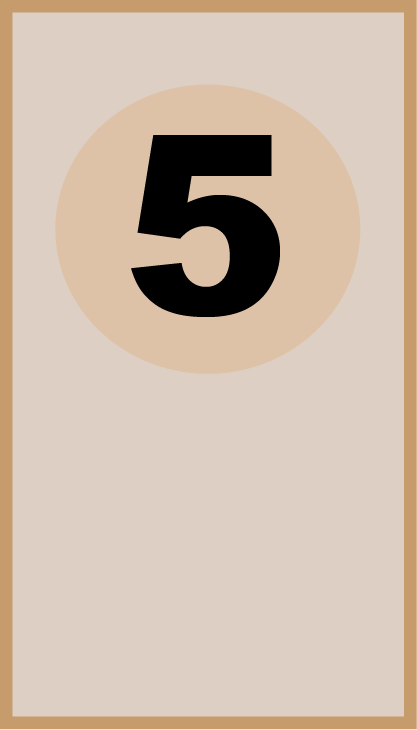
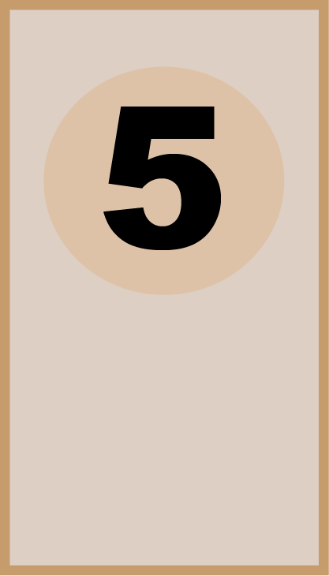

6-Jan
Wat zijn je goede voornemens voor dit jaar?
- Minimalistisch zijn en afleidingen verminderen
- Meer tijd buiten doorbrengen
- Zorgen dat ik mij niet afsluit van anderen
Wat heb jij nodig om langer te blijven werken bij FDND?
- Meer houvast op de toekomst
- Betere balans in mogelijkheden binnen de digitale wereld
- Een plezierige en inhoudelijke werkomgeving
8-Jan
Wat heb ik geleerd?
- Altijd eerst HTML schrijven voordat je begint met CSS
- Het belang van duidelijke structurering in je project
- Gebruik van de One-Column Layout
Wat heb ik gedaan?
- HTML geschreven als basis voor het ontwerp
- CSS toegevoegd na de HTML met een One-Column Layout
- Feedback ontvangen en toegepast op mijn workflow
13-Jan
Wat heb ik geleerd?
- Feedforward en feedback toepassen op micro-interacties
- Hoe je micro-interacties kunt verbeteren met teamfeedback
- Het belang van samenwerken bij interactieontwerp
Wat heb ik gedaan?
- Micro-interacties beoordeeld met een groep studenten
- Feedback gegeven en ontvangen op Sprint 5 interacties
- Nieuwe interactie ontworpen voor de opdrachtgever
15-Jan
Nieuwe CSS properties die ik heb geleerd
- Pose-to-pose
- Transition-timing-function
- Scroll-snap
Animatieprincipes die ik nog niet begrijp
- Exaggeration
- Appeal
Animatieprincipe dat ik ga toevoegen
- Arcs: toepassen in mijn I Love Web-website
23-Jan
Wat heb ik vandaag gedaan?
Vandaag hebben we ons voorbereid op de expo voor aanstaande vrijdag. Hier hebben we een poster gemaakt van de website die we deze sprint hebben behandeld. Een presenteer plaatje van het werk wat het afgelopen semester is gemaakt.


 


 
